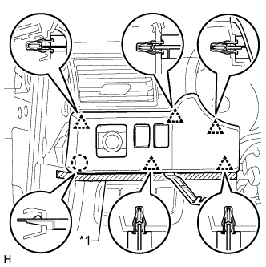

OUTER MIRROR SWITCH > REMOVAL |
| 1. REMOVE NO. 2 SWITCH HOLE BASE |
|  |
Put protective tape around the No. 2 switch hole base.
| *1 | Protective Tape |
Using a moulding remover, detach the 5 clips and claw.
Disconnect each connector and remove the No. 2 switch hole base.
| 2. REMOVE OUTER MIRROR SWITCH ASSEMBLY |
 |
Using a screwdriver, detach the 4 claws and remove the switch.